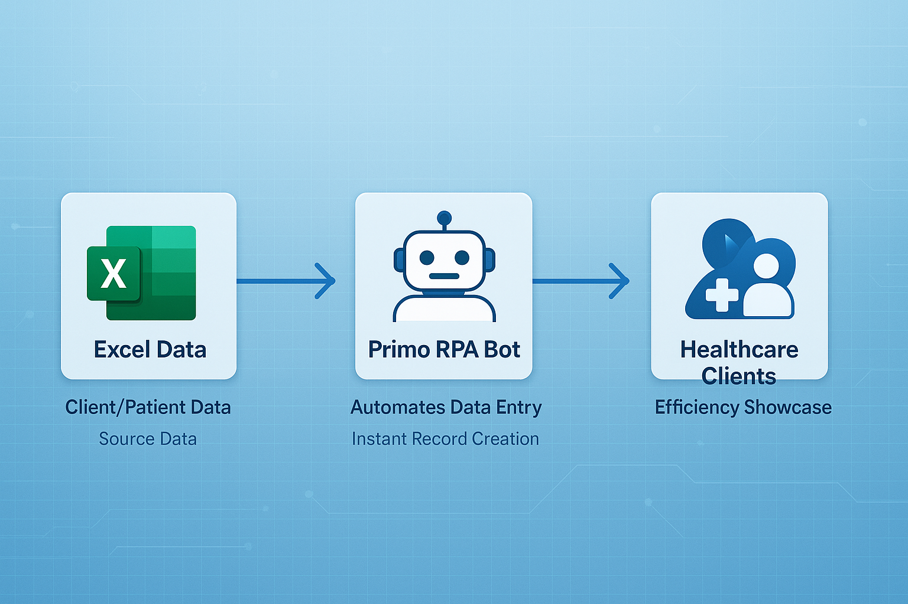

RPA Prototype – Automating Client/Patient Record Creation in Microsoft Dynamics 365

Duration: Jun 2022 - Jul 2022
Project Overview: Developed an RPA prototype using Primo RPA to automate the process of creating client and patient records in Microsoft Dynamics 365 CRM, significantly reducing manual data entry.
Key Achievements:
- Created a solution that reads data from Excel and maps it to Dynamics 365 CRM fields.
- Successfully demonstrated the prototype for two healthcare clients, showcasing its potential for efficiency improvements.
Skills:
Robotic Process Automation · Microsoft Dynamics 365 · Business Process Improvement · Data Integration · Product Demonstration